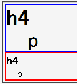
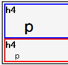

見出し要素（h1, h2, h3, h4, h5, h6）でfont-sizeプロパティが指定されていない場合、親要素のfont-sizeの値を一切参照しない。デフォルトスタイルシートで固定値が指定されている可能性がある。
<div style="font-size:2em; border:2px solid blue;"> <h4 style="margin:0;">h4</h4> <p style="margin:0;">p</p> </div> <div style="border:2px solid red;"> <h4 style="margin:0;">h4</h4> <p style="margin:0;">p</p> </div>
p
p
上のh4, p要素は親要素のfont-sizeを指定した場合、下のh4, p要素は親要素のfont-sizeを指定しない場合の例です。なお、上下に間延びしてしまうのでマージンを0にしています。
Moz1.0.2での表示（標準モード）
WinIE6.0での表示（標準モード）
見出し要素でfont-sizeプロパティを指定することでこのバグを回避できます。
<div style="font-size:2em; border:2px solid blue;"> <h4 style="margin:0; font-size:1em;">h4</h4> <p style="margin:0;">p</p> </div>
p
WinIE6.0では標準・互換モードともに不具合の発生が確認されました。